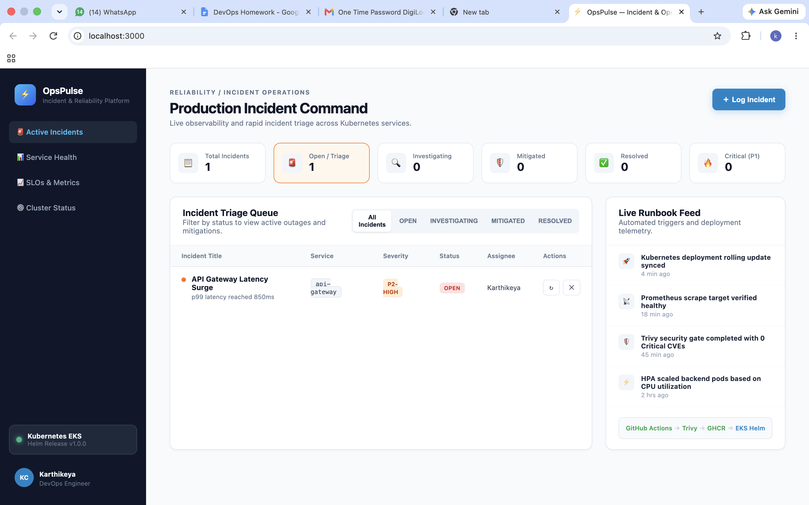
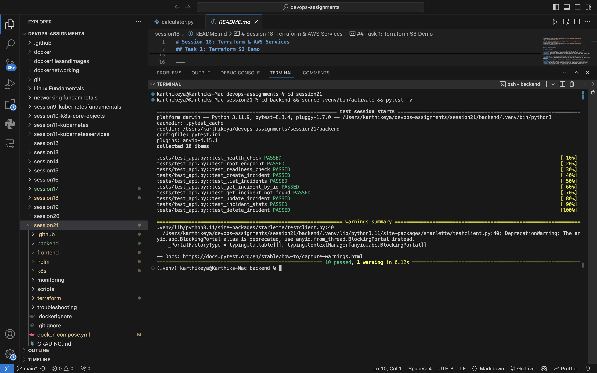
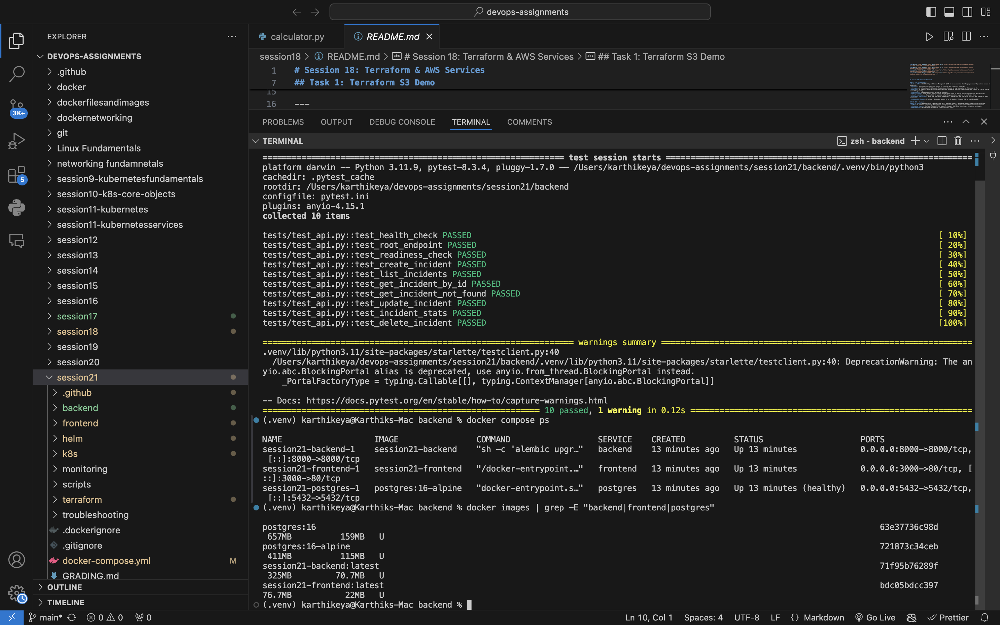
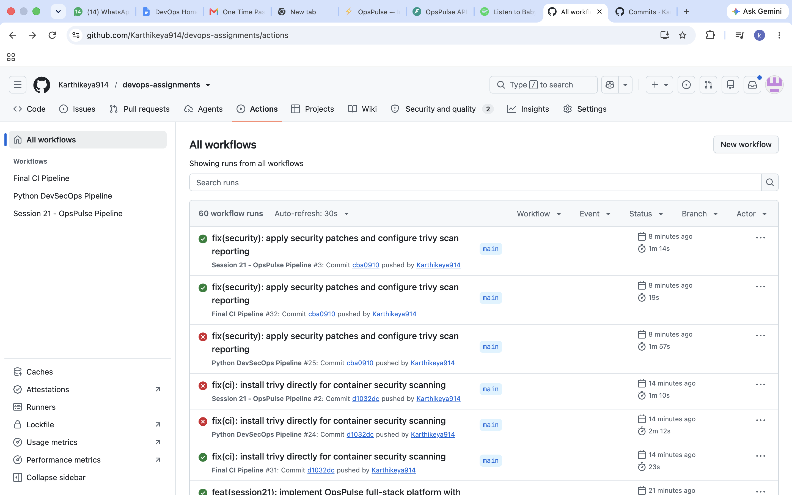
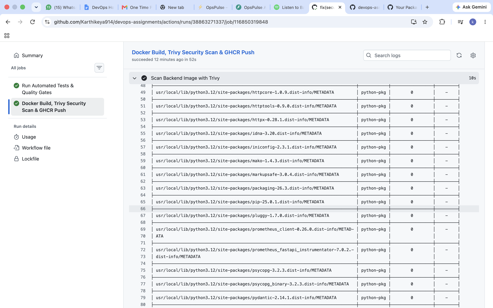
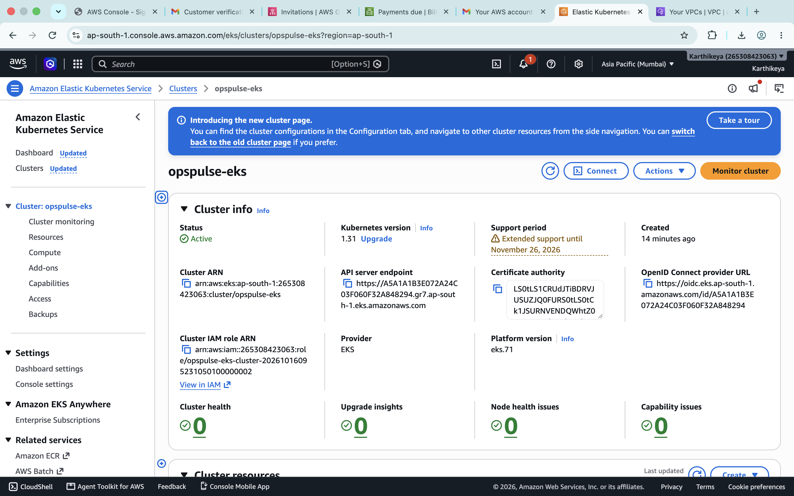
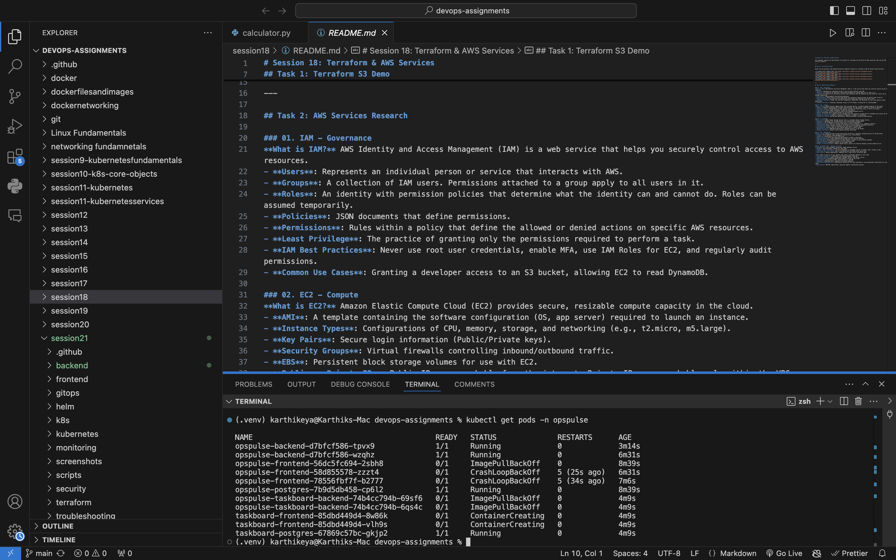
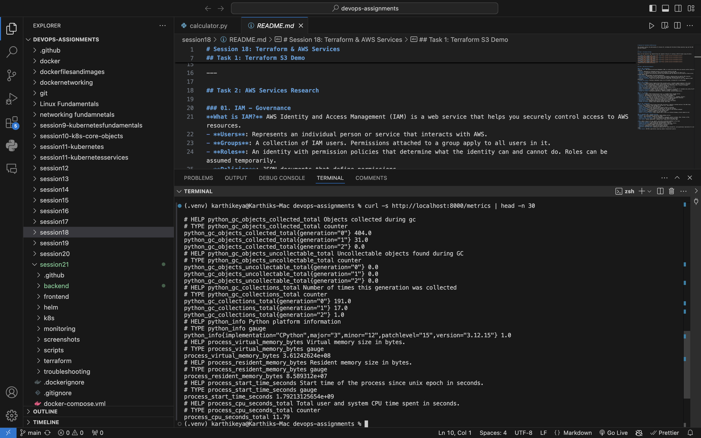

Session 21 Final Project • Karthikeya
Demonstrating a 10-module production DevOps lifecycle from developer laptop through automated testing, container security, cloud IaC on AWS EKS, and real-time observability.
Asynchronous REST API with Pydantic validation, SQLAlchemy ORM, and /health & /ready probes.
Single-page application featuring live incident metrics, severity badges, and dark-mode UX.
Relational storage with version-controlled schema migrations.
Docker Compose starts all 3 services seamlessly with a single command.

10 automated unit and integration tests covering CRUD, health checks, and 404 validation.
Uses SQLite in-memory database fixtures in conftest.py, leaving production data untouched.
All tests pass in 0.12 seconds as the first automated CI quality gate.

Frontend compiles with Node 20 and runs on lightweight Nginx Alpine (28MB).
Runs as unprivileged user 'appuser' (UID 10001) for container security compliance.
Connects frontend, backend, and postgres on internal bridged networks.

GitHub Actions triggers automatically on every push to main.
Runs pytest, builds frontend, compiles Docker images, and scans vulnerabilities.
Images published to GitHub Container Registry tagged with Git commit SHA.

Integrated into CI to scan both backend and frontend images for CVEs.
Configured to fail builds on CRITICAL or HIGH severity CVEs.
Lean multi-stage builds stripped of compiler tools produce 0 vulnerabilities.

Modular HCL declares VPC across 2 AZs and managed EKS cluster in ap-south-1.
Cluster 'opspulse-eks' and VPC 'opspulse-eks-vpc' verified active in AWS Console.
All 57 resources destroyed via terraform destroy with zero runaway costs.

Modular templates for Deployments, ClusterIP Services, Ingress, and HPA.
Dual-replica deployments with liveness and readiness probes for zero downtime.
Nginx Ingress controller routes / to frontend and /api to backend.

Backend exports real-time HTTP metrics, status code rates, and latency on /metrics.
Automated scraping configured via Helm values in monitoring/.
Liveness probe catches worker deadlocks; readiness probe verifies database pool.

Integrating automated Trivy scans into GitHub Actions catches CVEs before code reaches production registries.
Managing AWS VPC and EKS with Terraform eliminates manual drift and enables reliable provisioning and teardown in minutes.
Separating liveness (/health) and readiness (/ready) probes allows Kubernetes to route traffic safely and auto-recover failed pods.
Version-controlling Helm charts and declarative manifests ensures an immutable history of every production release.